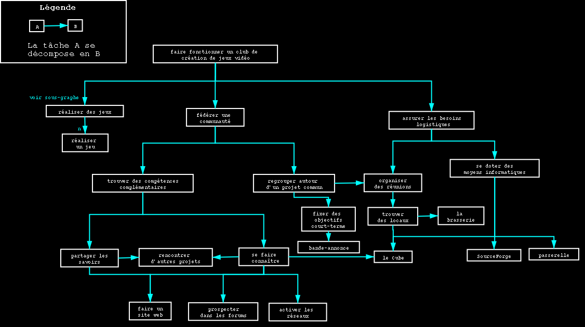
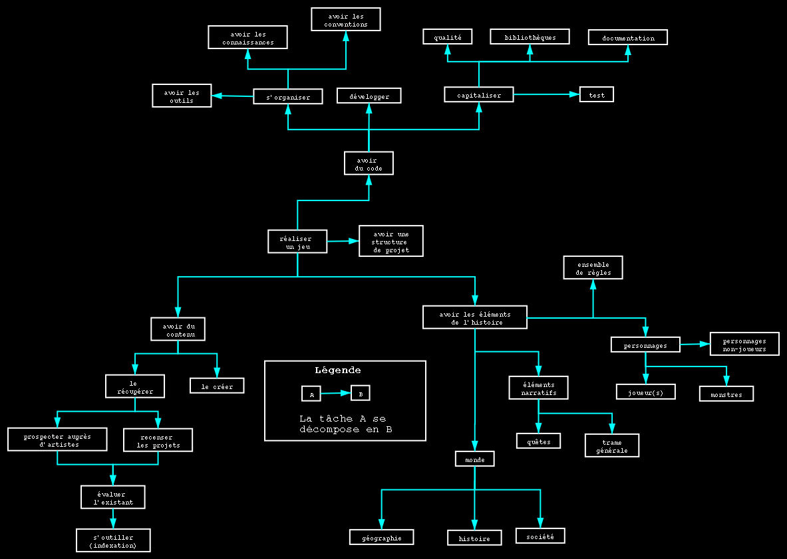
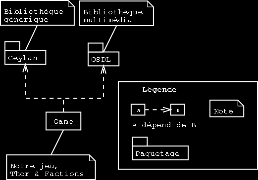
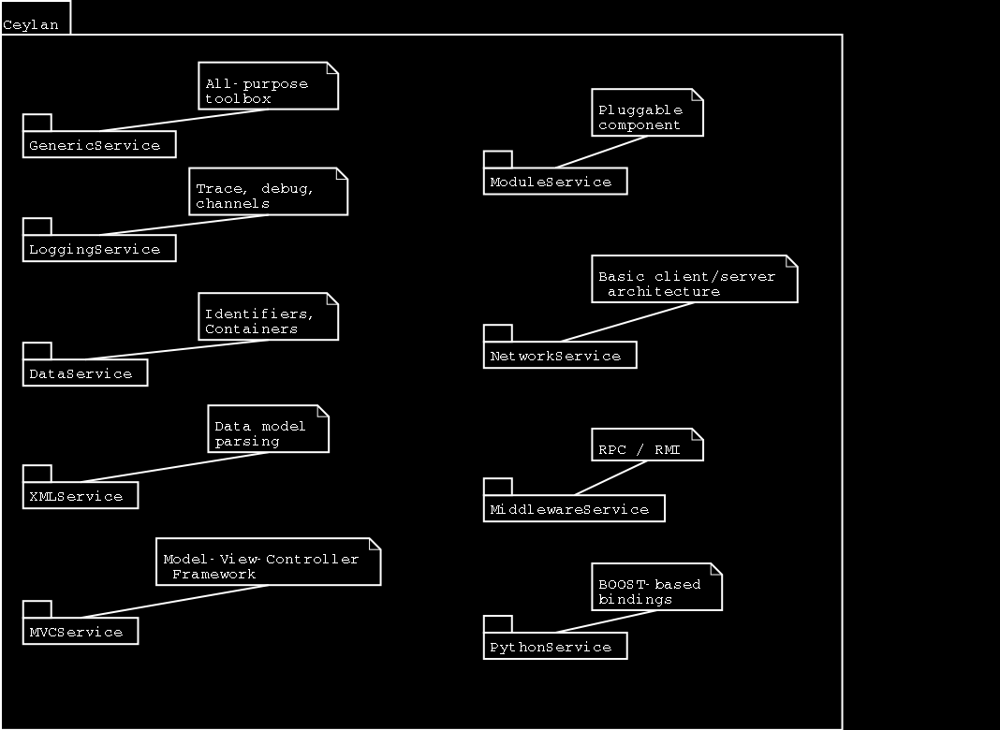

|
Retour en haut de page
Ce document essaie de faire le point sur l'ensemble des tâches nécessaires à la création d'un jeu vidéo amateur en équipe, dans le contexte d'un club. Il expose rapidement un point de vue, nullement unique, sur la structuration que cela implique. Attention, mettez vos lunettes !
|
les tâches du club [niveau 1]
zoom sur la réalisation [niveau 2] zoom sur la technique [niveau 3] zoom sur Ceylan [niveau 4] zoom sur OSDL [niveau 4] |
Il existe bien entendu plusieurs approches afin d'aboutir aux documents de conception d'un jeu. Ce site recense quelques résultats relatifs à des jeux du commerce.
Par exemple avec le cas de Doom, il est spécialement instructif : ce genre de document est un prétexte pour réfléchir en équipe et faire avancer la réflexion, même si le jeu qui en résulte en est parfois bien loin. Il est peut-être plus intéressant de commencer par se tromper, plutôt que de rester bloqué en essayant de n'écrire que des descriptions définitives.
Par ailleurs, dans la liste de documents de spécifications, certains sont de bonne qualité et peuvent servir d'exemples.
Enfin, on peut noter que des documents de conception mal réalisés peuvent toutefois déboucher sur de bons jeux !
|  |
|  |
|  |
|  |
|
|
Si vous disposez d'informations plus détaillées ou plus récentes que celles présentées dans ce document, si vous avez remarqué des erreurs, oublis, ou points insuffisamment traités, envoyez-nous un courriel !